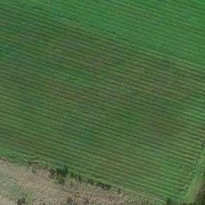
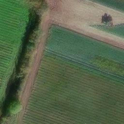
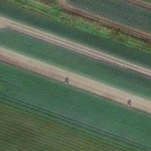
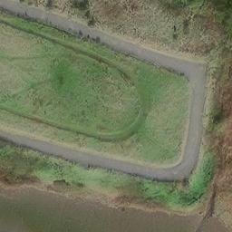
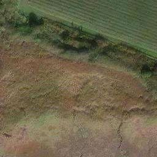
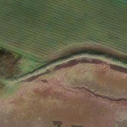
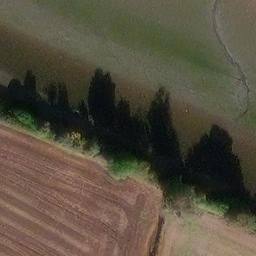
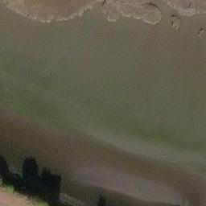
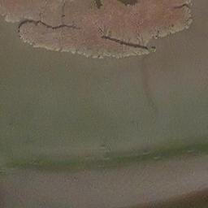

Scope of this viewer. These are the only free high-resolution images over the AOI. Wayback begins in 2014, so this timeline post-dates the 2005 event and can only reveal ground disturbance that occurred after 2014. The 2002-2008 burial itself is not covered by any free imagery and requires commercial OSNI/LPS / Bluesky / Getmapping / NCAP aerial photography. This tool shows the imagery; it does not itself detect disturbance - a human must inspect the frames.









Year: 2024 - 3x3 tile grid ~462 m wide - orange = confirmed point, dashed = 250 m review buffer
What this can and cannot show
- Can show: excavation, soil/scrub disturbance, new tracks, infill, vegetation clearance, structure changes, shoreline/sediment change - for 2014-2024.
- Cannot show: the 2005 burial event (pre-2014); a 1-2 m drum at sub-metre scale without a human reading the frame; any inference about intent.
Getting 2002-2008 burial evidence
Order historical aerial photography of the AOI from:
| Source | Use |
|---|---|
| OSNI / Land & Property Services (NI) | Authoritative NI archival air photos, ~2000s frames of Comber |
| Bluesky (oldaerialphotos.com) | UK & Ireland historical coverage |
| Getmapping | National UK surveys incl. NI |
| NCAP | Declassified / historical archive |
Request frames centred on 54.544375, -5.729841 for the years around 2002-2008.
Reproducibility
Tiles: https://wayback.maptiles.arcgis.com/arcgis/rest/services/world_imagery/mapserver/tile/{M}/18/{y}/{x} at zoom 18, centre tile x=126899, y=83490. Source: Esri Wayback / ArcGIS World Imagery.